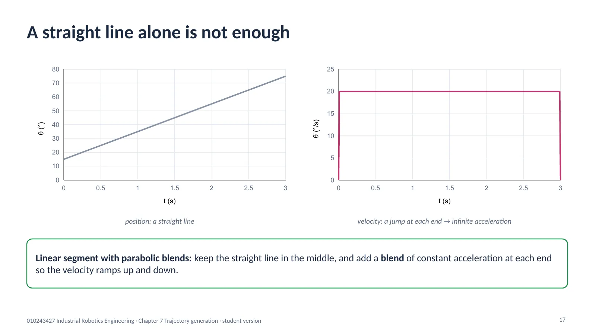
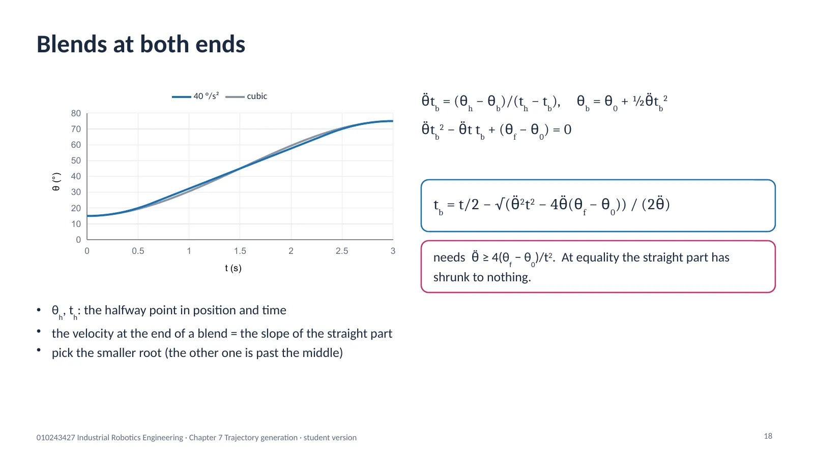
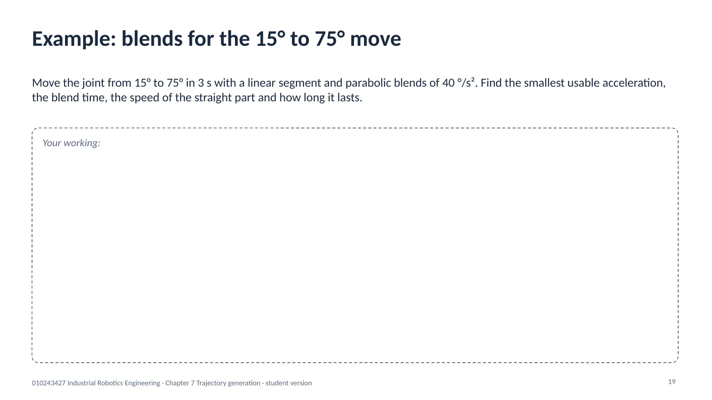
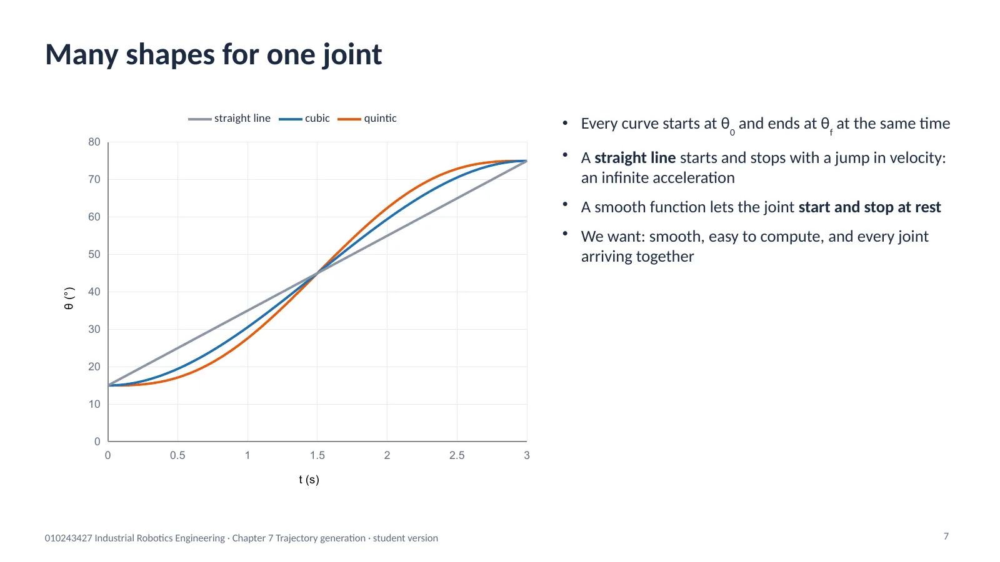

หน้า 7.2 ใช้พหุนามกำลังสามและกำลังห้าพาข้อต่อจากมุมเริ่มไปยังมุมเป้าหมาย ทางเลือกที่ง่ายกว่าคือเส้นตรง: ข้อต่อหมุนด้วยความเร็วคงที่ตลอดทาง แต่เส้นตรงล้วนต้องออกตัวและหยุดด้วยความเร็วที่กระโดด ซึ่งต้องใช้ความเร่งไม่จำกัด มอเตอร์จริงทำไม่ได้ หน้านี้แก้ปัญหานั้นด้วยเส้นตรงต่อด้วยพาราโบลา หรือ LSPB (linear segment with parabolic blends): เก็บเส้นตรงไว้ตรงกลาง แล้วเติมช่วงผสม (blend) ที่มีความเร่งคงที่ไว้ที่ปลายทั้งสองข้าง ความเร็วจึงค่อย ๆ เพิ่มขึ้นแล้วค่อย ๆ ลดลง กราฟความเร็วเป็นรูปสี่เหลี่ยมคางหมู ทุกโจทย์ใช้ข้อต่อหมุนข้อเดียวของ Craig ตัวอย่าง 7.1 ซึ่งหมุนจาก 15° ไป 75° ใน 3 วินาที ภาพซ้ายคือข้อต่อ ภาพขวาคือกราฟ θ, θ̇, θ̈ เทียบกับเวลา กด ▶ เพื่อเล่นการเคลื่อนที่ หน้านี้ครอบคลุมสไลด์หน้า 17–19 มี 3 โจทย์
Page 7.2 moved a joint from its start angle to its goal with cubic and quintic polynomials. A simpler choice is a straight line: the joint turns at one constant velocity all the way. But a pure straight line must start and stop with a jump in velocity, which takes an unbounded acceleration that no real motor can give. This page fixes that with a linear segment with parabolic blends, LSPB: keep the straight line in the middle and add a blend of constant acceleration at each end, so that the velocity ramps up and then down; the velocity plot becomes a trapezoid. Every problem uses the single turning joint of Craig's example 7.1, which turns from 15° to 75° in 3 s. On the left is the joint, on the right its θ, θ̇ and θ̈ against time; press ▶ to play the motion. The page covers slides pp. 17–19, with 3 problems.


